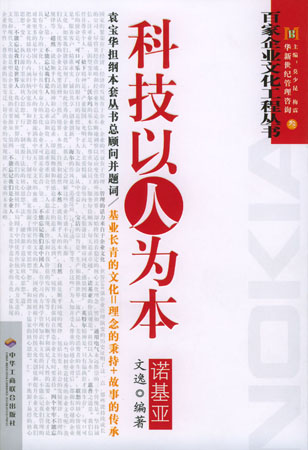
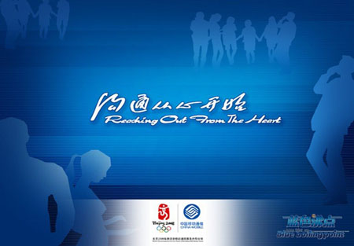
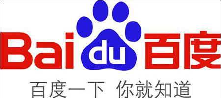
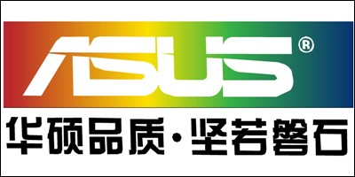

人类失去联想，世界将会怎样
联想的这个广告，不光是在IT行业，即使在整个品牌广告领域，也绝对是气势不凡的广告语。在这句广告语里，“联想”是泛义的，可以是和人类发展密切相关的“联系”、“想象”之类；而以“失去……会怎样”这样一种假设反问的形式，更加暗示受众“联想”对人类的重要性。结合前面的“联想电脑”和画面播放，这时的“联想”就成了狭义的，专指“联想”品牌。不同“联想”含义的暗合，使受众产生“联想电脑对（我们生活的）世界也是很重要的！”这种“移花接木”类型的广告词对于提升大众心目中的品牌形象比较有效。在配上那一组拥有猩猩、森林的象征着全系列沟通的电视广告也一直让人记忆深刻！
联想的这个广告，比后来巨额聘请那些明星拍的广告，不知好了多少倍。
http://blog.techweb.com.cn/Uploadfiles/2007-10/32146826165.jpg
诺基亚：科技以人为本
来自芬兰首都赫尔辛基的一个小镇的通讯品牌诺基亚，最终能成为一个世界移动通讯巨人，这句广告语起到了很大的作用。“科技以人为本”是诺基亚的品牌核心价值。它是诺基亚在品牌传播中始终如一的理念，向消费者传递诺基亚时时处处为消费者着想的精神——使用户充分享受人性化科技所带来的种种乐趣与方便，获得成就、时尚、个性等难忘的体验。在这句广告理念的引导下，诺基亚逐渐成为一个科技领先、有个性、充满人性化的品牌；一个勇于创新，颇具品位、时尚和生活情趣的品牌。一步一个脚印，诺基亚最终成就王图霸业。
 http://blog.techweb.com.cn/Uploadfiles/2007-10/32151437743.jpg
网易：网聚人的力量
人的力量是有限的，网络的力量是无限的。网易的广告词“网聚人的力量”可以说是在是相当正确的。互联网，就是一种“网聚人的力量”的有力工具。“网易，网聚人的力量”这句广告词在当年互联网最红火的时候通过电视、广播、报纸、网络等等媒体传遍了全中国的大街小巷，许多IT精英们也真的都纷纷的奔向网易。这句广告词也是中国互联网行业广告语中的经典之作。
中国移动：沟通从心开始
一个十二三岁的小女孩拿出手机，拨通了离她很远的爷爷的电话，然后画外音徐徐升起“中国移动，沟通从心开始”。这感人的场面，可能也是国人第一次知道原来电信企业也会做广告，而且广告能做得如此感人。也正因为如此，“沟通从心开始”的中国移动一跃成为了全球最大的移动网络运营商。
 http://blog.techweb.com.cn/Uploadfiles/2007-10/32153849841.jpg
IBM：没有不做的小生意，没有解决不了的大问题。
No business too small, no problem too big.
在蓝色巨人经营处于低谷时，提出这一颇具煽动性的口号，希望不仅成为一个名副其实的跨国企业，而且真正成为为高科技电子领域提供一条龙解决方案的企业，进入电子商务时代，IBM正在将这一角色实现，扮演着电子商务解决方案的提供商角色。
赢海威：中国人离信息高速公路还有多远？向北1500米。
1996年深秋的一天，北京白颐路口竖起了一面硕大的牌子，上面写着：“中国人离信息高速公路还有多远？向北1500米。”———前方向北1500米，就是瀛海威的网络科教馆。
说起瀛海威，很多年轻的网民可能不知情，但是“想当年”，瀛海威曾是一面标志性的大旗，一家名声曾经如日中天的互联网先锋企业。张树新为瀛海威打出的这句广告语，其口气之大、胆色之壮，一夜之间便令瀛海威在中关村地区迅速扬名。
说不清是这句广告语成就了瀛海威，还是瀛海威成就了这句广告语，反正这句广告语已经成为很多人对早期中国互联网的一个经典记忆，说起来乐此不彼。
百度一下，你就知道
世界搜索引擎的发展，一直靠的是口碑相传，百度也是如此。百度一直低调，依靠网民口碑相传，百度赢得了今日的辉煌！从“有问题百度一下”到“百度一下，你就知道”，百度7年风雨，改变了人们的生活习惯。“百度一下，你就知道”，成了数亿万网民们每天都要做的事！随着百度的这句广告语迅速流传开来，百度的品牌也更加深入人心。
 http://blog.techweb.com.cn/Uploadfiles/2007-10/32158496314.jpg
戴尔：美国货，本土价
“美国货，本土价”，戴尔的这句广告语除了向大家传递其品牌是来自美国以外，还体现了DELL优秀的品质和平易近人的价格。这句广告与平实、简练，却很实用。
华硕品质，坚如磐石
华硕刚来大陆市场时，是以板卡厂家的面目出现的。华硕主板由于出货量大，品德可靠，迅速就成了“高品质”的代名词。“华硕品质，坚如磐石”，这是华硕的一句广告语，也代表了华硕电脑的一种理念，一种把质量放在第一位的信念。可以说，很多用户都是冲着这句广告语开始有了购买冲动的。

http://blog.techweb.com.cn/Uploadfiles/2007-10/32133666918.jpg
全世界计算机联合起来，英特耐特就一定会实现
还记得中关村的那个著名的广告吗？在电子一条街的一座楼顶，悬挂着一幅巨大的广告，远一站路都能看清上面的广告词：“全世界计算机联合起来，英特耐特就一定会实现。”这个句式大部分中国人都耳熟能详，这条广告不仅能让人会心一笑，还能让人热血澎湃。（作者：刘兴亮）